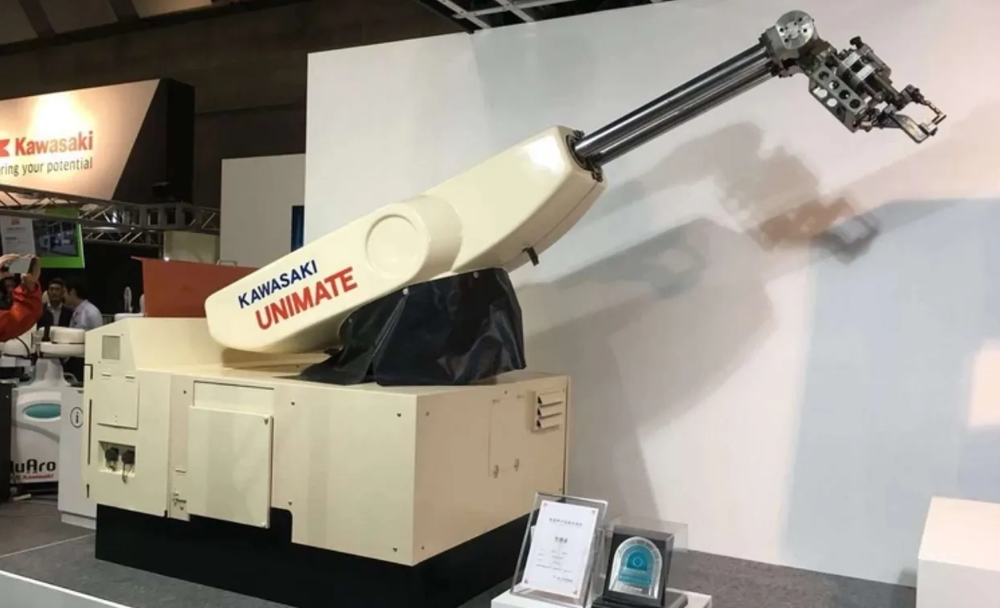
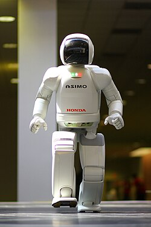
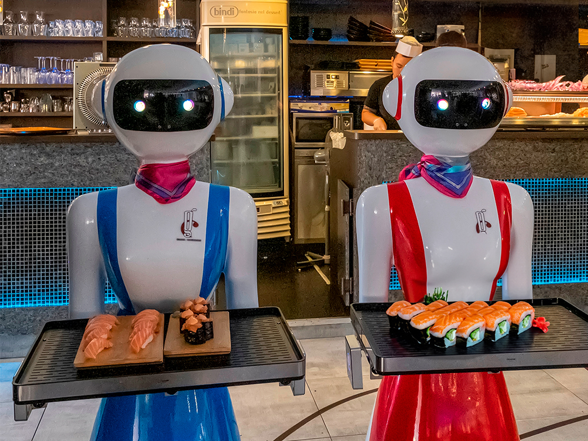

Historia de la Robótica
Las primeras ideas sobre robots se remontan a la antigüedad. Civilizaciones como los griegos y los chinos imaginaron autómatas que realizaban tareas sencillas. Por ejemplo, el ingeniero griego Hero de Alejandría creó dispositivos que funcionaban con vapor.
Línea de Tiempo de la Robótica
1950
Primer robot industrial
Se desarrolla el primer robot industrial, el Unimate, que realiza tareas en la línea de producción.
1970
Robótica móvil
Se empiezan a desarrollar robots móviles capaces de realizar tareas en entornos no estructurados.
Robot ASIMO desarrollado por Honda
2000
IA y robótica
La inteligencia artificial comienza a integrarse en los robots, permitiéndoles aprender y adaptarse a su entorno.

2024
Robots colaborativos
Se desarrollan robots colaborativos que trabajan junto a humanos en entornos industriales y de servicio.
